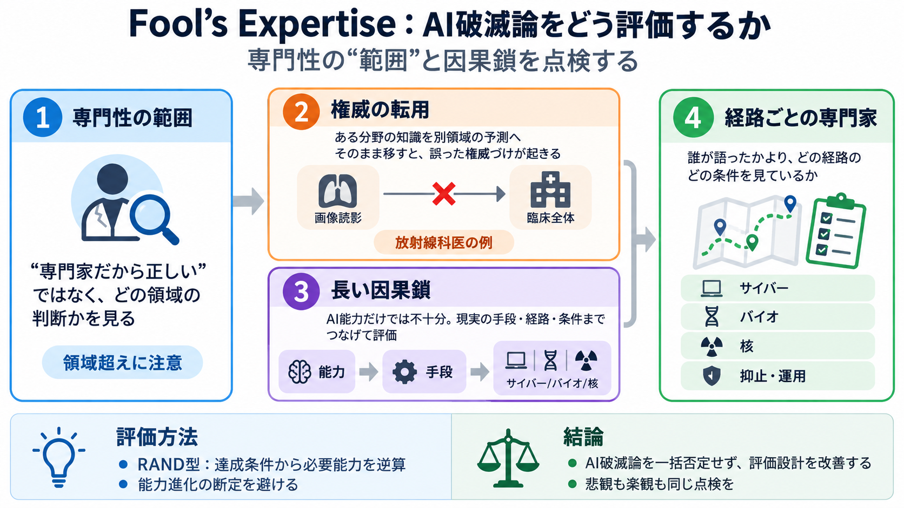

Jensen Huang vs. the A.I. Doomers — The Ezra Klein Show
Huang says labs that believe they cannot control their systems should simply not ship products, rather than seek regulat…

専門性の“範囲”を見る
「専門家が言うから正しい」は危険。どの領域の専門性が、どんな主張に使われているかを点検します。
本要約は「Fool’s Expertise（愚者の専門性）」という批判観点で、ドゥーマー議論を評価する枠組みを整理します。
権威が転用される
ある領域の経験・知識が、別領域の予測に“そのまま”適用されると、誤った権威づけが起きます。ポイントは「専門家が間違える」ではなく「主張が専門領域を超えている」です。
落とし穴は評価軸
Ezra Klein側はAI分野の権威に過度に依拠し、より踏み込んだ反証（専門性の範囲の点検）を欠いた、という批判があります。
ここでの論点は結論の是非より、誰が何を語れる立場なのかの扱い方です。
放射線科医の例
Hintonの放射線科医（ロントゲン画像）の予測は外れた。筆者は「未来が読めなかった」よりも「画像解釈以外の実務を超えた」点に原因があると見ます。
能力だけでは足りない
破滅（カタストロフ）の議論は、単一要素の理解では判断できません。長い因果鎖と、現実世界の“経路”への接続が前提になります。
だから「AIの専門家の一般予測」だけで全体を閉じないことが重要になります。
現実の接続点
AIによる破滅が現実に起きるには、複数の領域がつながる必要があります。サイバー、バイオ、核などの専門家の知見が、経路ごとの条件を埋めます。
重要なのは“どの専門家が話したか”より、“どの経路のどの条件を見ているか”です。
RANDのアプローチ
RANDの報告書は、AI能力の“将来進化”の外挿に踏み込みすぎない形で評価します。代わりに、関連領域の専門家を集めて「必要な能力」を逆算する方向をとった点が評価されます。
恐怖の伝染を抑える
ドゥーマー論には“恐怖の伝染”が起きやすい。専門性の範囲、因果鎖の長さ、現実経路の評価を重視することで、その増幅を抑えられるというメッセージです。
評価軸を改善する
入力文の強みは、評価軸を「専門性の範囲」と「因果鎖の長さ」に置いた点です。技術の進歩速度や意図推測が過熱すると、「専門家だから妥当」が誤りを固定しやすいからです。
結論としてはAI破滅論を一括で退けるというより、議論の評価設計を良くせよ、という提案として読むのが適切です。
両方向に注意
ただし限界もあります。悲観だけでなく、楽観側も“専門性の範囲”を都合よく限定してしまう可能性があるからです。
切り捨ての副作用
RANDのように将来能力の予測を抑えるのは合理的です。一方で、条件が満たされたときの“変化の可能性”を見落とすリスクもあるため、不確実性の境界を明示する姿勢が望まれます。
読むときの参照点
入力文と要約で言及された“評価の材料”を、追加検討の観点として整理します。
次に読むときは、「専門性の範囲」「因果鎖の長さ」「現実経路の評価設計」を同じ軸で突き合わせて確認してください。
Huang says labs that believe they cannot control their systems should simply not ship products, rather than seek regulat…
# Fool's Expertise I listened to the recent Ezra Klein interview with Nvidia CEO Jensen Huang, which seems to be someth…
Jensen Huang Thinks A.I. ... He thinks that the doomers are just scaring people, and that the industry doesn't need new …
Jensen Huang warned that AI labs unable to contain their models should shut down: The Nvidia CEO made the comments on Th…
Jensen Huang, the chief executive of Nvidia, argues on “The Ezra Klein Show” that some alarmists have gone too far.